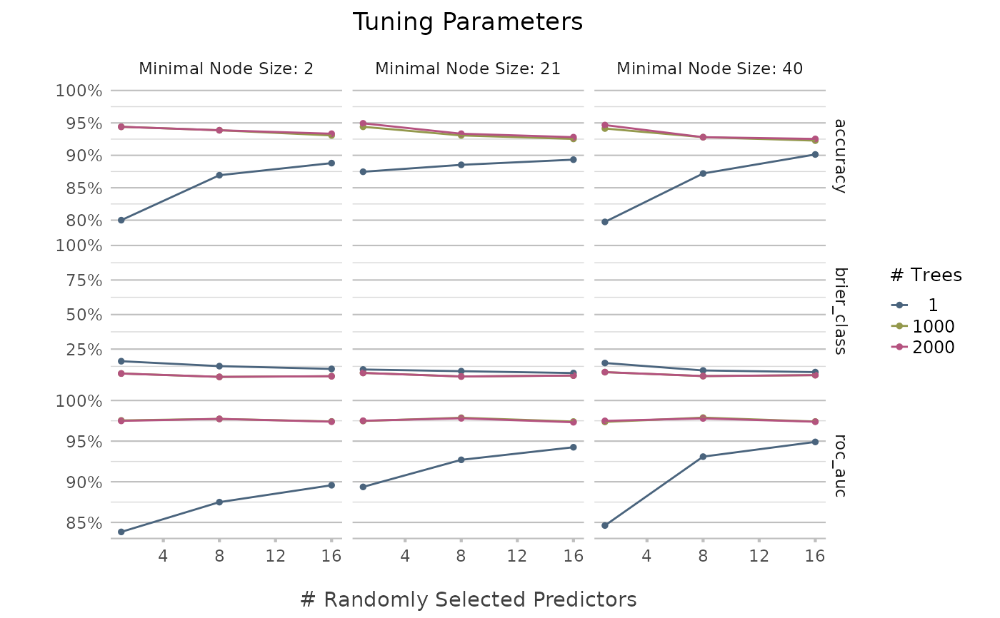
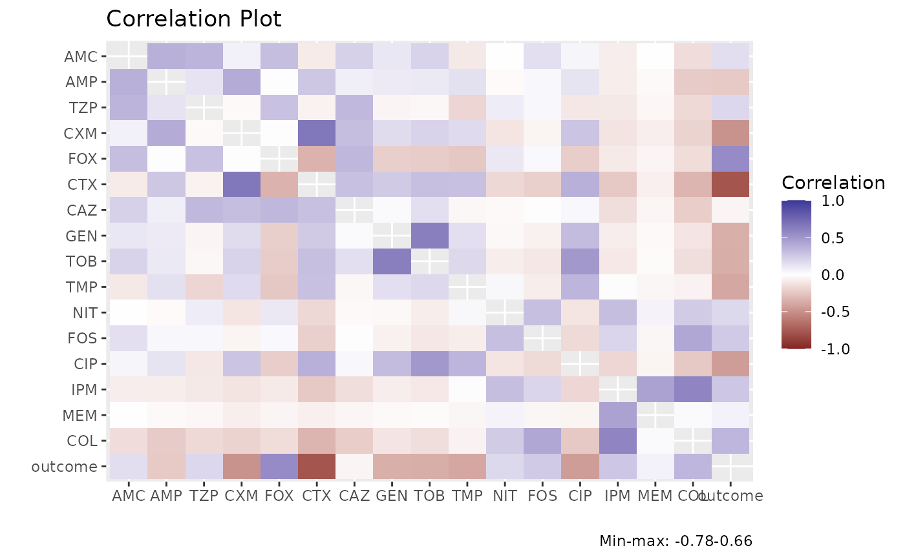
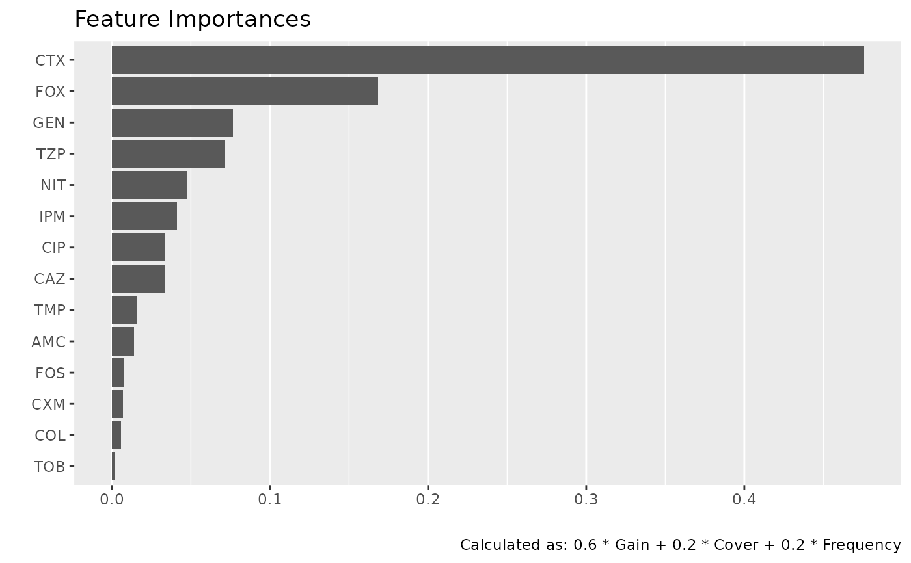
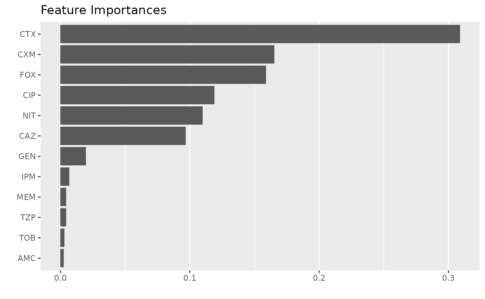
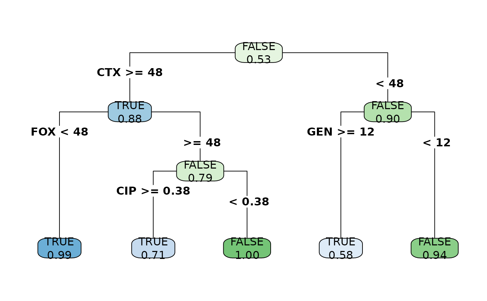
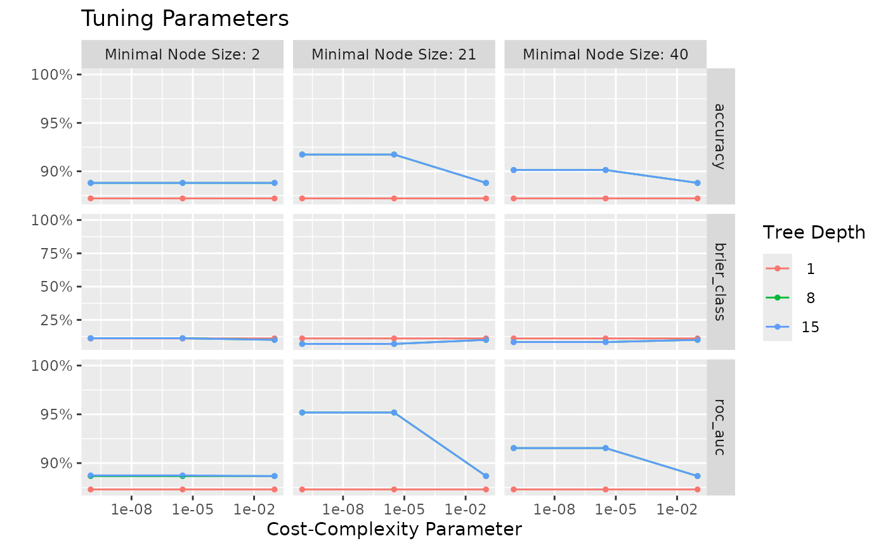
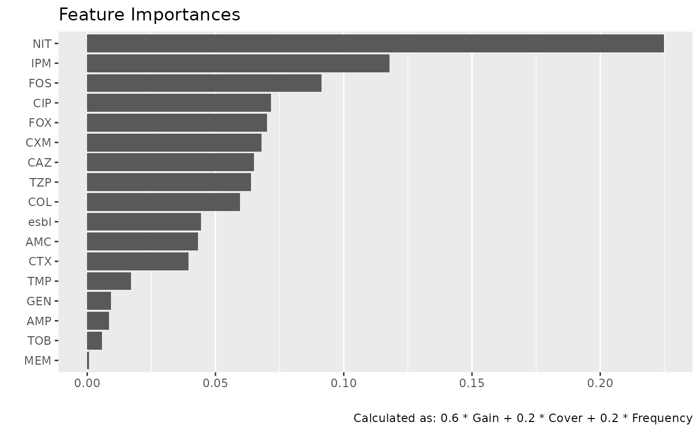
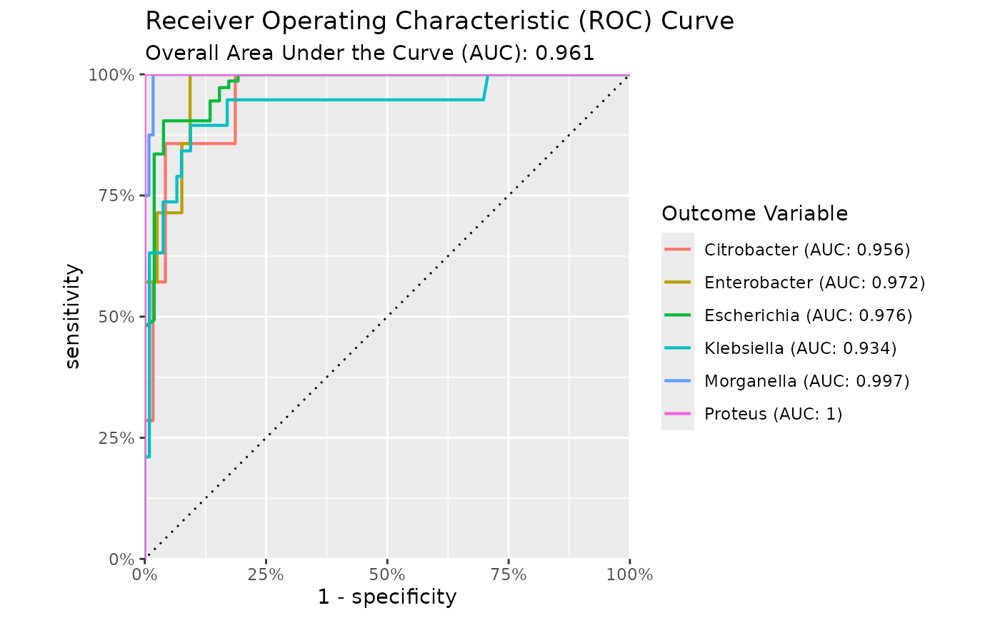
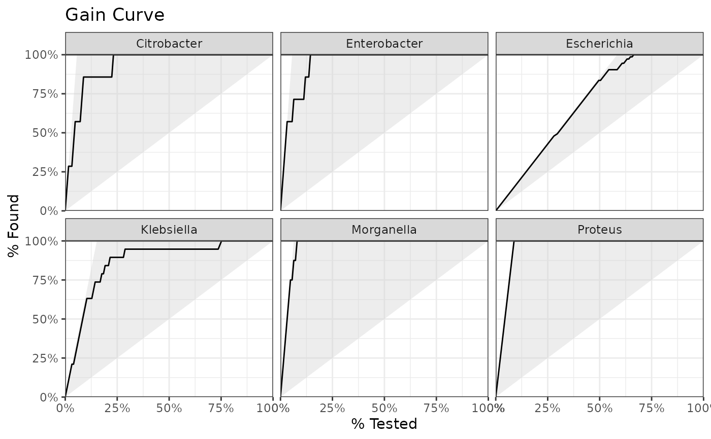
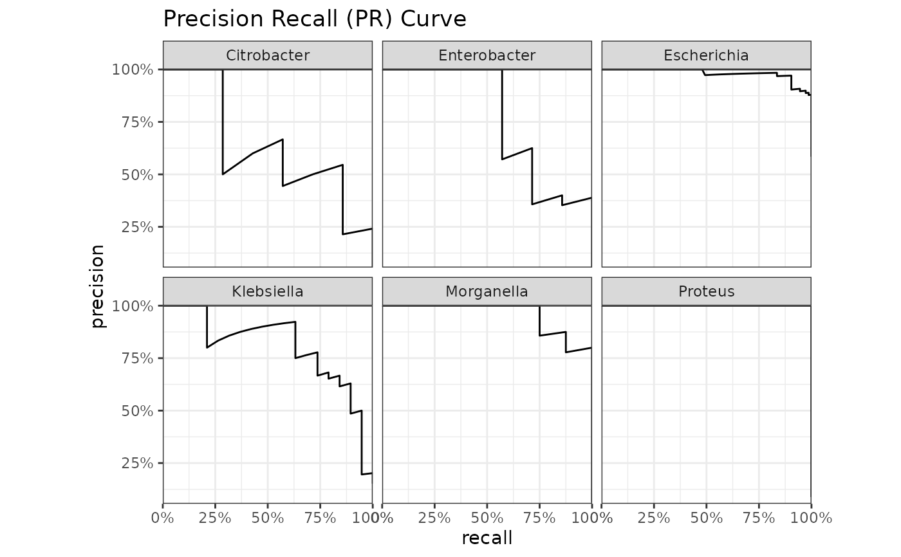

These functions create machine learning models using different parsnip
model specifications and engines, and provide a unified interface for
training, evaluating, tuning, and applying those models.
The ml_*() functions are structured wrappers around the tidymodels
ecosystem, most notably parsnip,
recipes, rsample,
tune, and yardstick.
The goal is to reduce boilerplate while preserving access to the underlying modeling assumptions, parameters, and diagnostics.
ml_xg_boost(
.data,
outcome,
predictors = everything(),
training_fraction = 0.75,
strata = NULL,
na_threshold = 0.01,
correlation_threshold = 0.9,
centre = FALSE,
scale = FALSE,
engine = "xgboost",
mode = c("classification", "regression", "unknown"),
trees = 15,
...,
quiet = FALSE
)
ml_decision_trees(
.data,
outcome,
predictors = everything(),
training_fraction = 0.75,
strata = NULL,
na_threshold = 0.01,
correlation_threshold = 0.9,
centre = FALSE,
scale = FALSE,
engine = "rpart",
mode = c("classification", "regression", "unknown"),
tree_depth = 30,
...,
quiet = FALSE
)
ml_random_forest(
.data,
outcome,
predictors = everything(),
training_fraction = 0.75,
strata = NULL,
na_threshold = 0.01,
correlation_threshold = 0.9,
centre = FALSE,
scale = FALSE,
engine = "ranger",
mode = c("classification", "regression", "unknown"),
trees = 500,
...,
quiet = FALSE
)
ml_neural_network(
.data,
outcome,
predictors = everything(),
training_fraction = 0.75,
strata = NULL,
na_threshold = 0.01,
correlation_threshold = 0.9,
centre = TRUE,
scale = TRUE,
engine = "nnet",
mode = c("classification", "regression", "unknown"),
penalty = 0,
epochs = 100,
...,
quiet = FALSE
)
ml_nearest_neighbour(
.data,
outcome,
predictors = everything(),
training_fraction = 0.75,
strata = NULL,
na_threshold = 0.01,
correlation_threshold = 0.9,
centre = TRUE,
scale = TRUE,
engine = "kknn",
mode = c("classification", "regression", "unknown"),
neighbors = 5,
weight_func = "triangular",
...,
quiet = FALSE
)
ml_linear_regression(
.data,
outcome,
predictors = everything(),
training_fraction = 0.75,
strata = NULL,
na_threshold = 0.01,
correlation_threshold = 0.9,
centre = TRUE,
scale = TRUE,
engine = "lm",
mode = "regression",
...,
quiet = FALSE
)
ml_logistic_regression(
.data,
outcome,
predictors = everything(),
training_fraction = 0.75,
strata = NULL,
na_threshold = 0.01,
correlation_threshold = 0.9,
centre = TRUE,
scale = TRUE,
engine = "glm",
mode = "classification",
penalty = 0.1,
...,
quiet = FALSE
)
# S3 method for class 'certestats_ml'
confusion_matrix(data, ...)
# S3 method for class 'certestats_ml'
predict(object, new_data, type = NULL, ...)
apply_model_to(
object,
new_data,
only_prediction = FALSE,
only_certainty = FALSE,
correct_mistakes = TRUE,
impute_algorithm = "mice",
...
)
feature_importances(object, ...)
feature_importance_plot(object, ...)
roc_plot(object, ...)
gain_plot(object, ...)
tree_plot(object, ...)
correlation_plot(
data,
add_values = TRUE,
cols = everything(),
correlation_threshold = 0.9
)
get_metrics(object)
get_accuracy(object)
get_kappa(object)
get_recipe(object)
get_specification(object)
get_rows_testing(object)
get_rows_training(object)
get_original_data(object)
get_roc_data(object)
get_coefficients(object)
get_model_variables(object)
get_variable_weights(object)
tune_parameters(object, ..., only_params_in_model = FALSE, levels = 5, k = 10)
check_testing_predictions(object)
# S3 method for class 'certestats_ml'
autoplot(object, plot_type = "roc", ...)
# S3 method for class 'certestats_feature_importances'
autoplot(object, ...)
# S3 method for class 'certestats_tuning'
autoplot(object, type = c("marginals", "parameters", "performance"), ...)A data set used for model training and internal testing.
The data will be split into training and testing subsets using
rsample::initial_split().
Outcome variable, also called the response or dependent
variable; the variable to be predicted. The value is evaluated using
dplyr::select() and therefore supports the tidyselect language.
For classification models, the outcome will be coerced to a factor if it is not already a factor or character.
Explanatory variables, also called the predictors or
independent variables; the variables used to predict outcome.
This argument supports the tidyselect language and defaults to
everything().
Predictors are processed via a recipes::recipe(), including dummy
encoding for nominal variables and optional centring, scaling, and
correlation filtering.
Fraction of rows to be used for training,
defaults to 0.75. The remaining rows are used for testing.
If a value greater than 1 is supplied, it is interpreted as the
absolute number of rows to include in the training set.
When strata is supplied, the split is stratified accordingly.
A variable in data (single character or name) used to conduct
stratified sampling. When not NULL, each resample is created within the
stratification variable. Numeric strata are binned into quartiles.
Maximum fraction of NA values (defaults to 0.01) of the predictors before they are removed from the model, using recipes::step_rm()
A value (default 0.9) to indicate the correlation threshold. Predictors with a correlation higher than this value with be removed from the model, using recipes::step_corr()
A logical to indicate whether the predictors should be transformed so that their mean will be 0, using recipes::step_center(). Binary columns will be skipped.
A logical to indicate whether the predictors should be transformed so that their standard deviation will be 1, using recipes::step_scale(). Binary columns will be skipped.
R package or function name to be used for the model, will be passed on to parsnip::set_engine()
Type of predicted value.
One of "classification", "regression", or "unknown".
If "unknown", the mode will be inferred by the underlying parsnip
model where possible. Explicitly setting mode is recommended to avoid
ambiguity.
An integer for the number of trees contained in the ensemble.
Additional arguments passed to the underlying parsnip
model specification (e.g. trees, mtry, penalty).
For tune_parameters(), these must be dials parameter objects
such as dials::trees() or dials::mtry().
For predict(), these arguments are
forwarded to parsnip::predict.model_fit().
Also see Model Functions.
A logical to silence console output.
For the tune_parameters() function, these must be dials package calls, such as dials::trees() (see Examples).
For predict(), these must be arguments passed on to parsnip::predict.model_fit()
An integer for maximum depth of the tree.
A non-negative number representing the total amount of regularization (specific engines only).
An integer for the number of training iterations.
A single integer for the number of neighbors
to consider (often called k). For kknn, a value of 5
is used if neighbors is not specified.
A single character for the type of kernel function used
to weight distances between samples. Valid choices are: "rectangular",
"triangular", "epanechnikov", "biweight", "triweight",
"cos", "inv", "gaussian", "rank", or "optimal".
outcome of machine learning model
A rectangular data object, such as a data frame.
A single character value or NULL. Possible values
are "numeric", "class", "prob", "conf_int", "pred_int",
"quantile", "time", "hazard", "survival", or "raw". When NULL,
predict() will choose an appropriate value based on the model's mode.
a logical to indicate whether predictions must be returned as vector, otherwise returns a data.frame
a logical to indicate whether certainties must be returned as vector, otherwise returns a data.frame
a logical to indicate whether missing variables and missing values should be added to new_data
the algorithm to use in impute() if correct_mistakes = TRUE. Can be "mice" (default) for the Multivariate Imputations by Chained Equations (MICE) algorithm, or "single-point" for a trained median.
a logical to indicate whether values must be printed in the tiles
columns to use for correlation plot, defaults to everything()
a logical to indicate whether only parameters in the model should be tuned
An integer for the number of values of each parameter to use
to make the regular grid. levels can be a single integer or a vector of
integers that is the same length as the number of parameters in ....
levels can be a named integer vector, with names that match the id values
of parameters.
The number of partitions of the data set
the plot type, can be "roc" (default), "gain", "lift" or "pr". These functions rely on yardstick::roc_curve(), yardstick::gain_curve(), yardstick::lift_curve() and yardstick::pr_curve() to construct the curves.
A trained machine learning model of class certestats_ml, extending
a parsnip::model_fit object.
The model object contains additional attributes with training data, preprocessing steps, predictions, and performance metrics.
To predict regression (numeric values), the function ml_logistic_regression() cannot be used.
To predict classifications (character values), the function ml_linear_regression() cannot be used.
The apply_model_to() function prioritises successful prediction over strict validation, as correct_mistakes defaults to TRUE.
The workflow of the ml_*() functions is approximately:
.data
|
rsample::initial_split()
/ \
rsample::training() rsample::testing()
| |
recipes::recipe() |
| |
recipes::step_corr() |
| |
recipes::step_center() |
| |
recipes::step_scale() |
| |
recipes::prep() |
/ \ |
recipes::bake() recipes::bake()
| |
generics::fit() yardstick::metrics()
| |
model object attributes(model)
The predict() function can be used to fit a model on a new data set. Its wrapper apply_model_to() works in the same way, but can also detects and fixes missing variables, missing data points, and data type differences between the trained data and the input data.
Use feature_importances() to get the importance of all features/variables. Use autoplot() afterwards to plot the results. These two functions are combined in feature_importance_plot(). Feature importance values are model-specific heuristics and are not comparable across model types.
Use The tree_plot() to plot the decision tree. For XGBoost models, xgboost::xgb.plot.tree() will be used. For all other tree models, rpart.plot::rpart.plot() will be used.
Use correlation_plot() to plot the correlation between all variables, even characters. If the input is a certestats ML model, the training data of the model will be plotted.
Use the get_model_variables() function to return a zero-row data.frame with the variables that were used for training, even before the recipe steps.
Use the get_variable_weights() function to determine the (rough) estimated weights of each variable in the model. This is not as reliable as retrieving coefficients, but it does work for any model. The weights are determined by running the model over all the highest and lowest values of each variable in the trained data. The function returns a data set with 1 row, of which the values sum up to 1.
Use the tune_parameters() function to analyse tune parameters of any ml_*() function. Without any parameters manually defined, it will try to tune all parameters of the underlying ML model. The tuning will be based on a K-fold cross-validation, of which the number of partitions can be set with k. The number of levels will be used to split the range of the parameters. For example, a range of 1-10 with levels = 2 will lead to [1, 10], while levels = 5 will lead to [1, 3, 5, 7, 9]. The resulting data.frame will be sorted from best to worst. These results can also be plotted using autoplot().
The check_testing_predictions() function combines the data used for testing from the original data with its predictions, so the original data can be reviewed per prediction.
Use autoplot() on a model to plot the receiver operating characteristic (ROC) curve, the gain curve, the lift curve, or the precision-recall (PR) curve. For the ROC curve, the (overall) area under the curve (AUC) will be printed as subtitle.
The ml_*() functions return a model object with the following
attributes:
properties: a list containing model metadata, including the ML
function used, engine, mode, training/testing sizes, and model-specific
parameters (e.g. trees, tree_depth)
recipe: a prepped recipes::recipe() used for training and testing
data_original: the original input data (after removal of invalid strata)
data_structure: a zero-row data.frame containing the trained variables
data_means: column means of numeric training variables
data_training: processed training data after recipe baking
data_testing: processed testing data after recipe baking
rows_training: integer indices of training rows in data_original
rows_testing: integer indices of testing rows in data_original
predictions: predictions on the testing data
metrics: performance metrics returned by yardstick::metrics()
correlation_threshold: numeric correlation threshold used in preprocessing
centre: logical indicating whether centring was applied
scale: logical indicating whether scaling was applied
These functions wrap parsnip model specifications. Arguments set in ... will be passed on to these parsnip functions.
ml_decision_trees: parsnip::decision_tree()
ml_linear_regression: parsnip::linear_reg()
ml_logistic_regression: parsnip::logistic_reg()
ml_neural_network: parsnip::mlp()
ml_nearest_neighbour: parsnip::nearest_neighbor()
ml_random_forest: parsnip::rand_forest()
ml_xg_boost: parsnip::boost_tree()
# 'esbl_tests' is an included data set, see ?esbl_tests
print(esbl_tests, n = 5)
#> # A tibble: 500 × 19
#> esbl genus AMC AMP TZP CXM FOX CTX CAZ GEN TOB TMP SXT
#> <lgl> <chr> <dbl> <dbl> <dbl> <dbl> <dbl> <dbl> <dbl> <dbl> <dbl> <dbl> <dbl>
#> 1 FALSE Esche… 32 32 4 64 64 8 8 1 1 16 20
#> 2 FALSE Esche… 32 32 4 64 64 4 8 1 1 16 320
#> 3 FALSE Esche… 4 2 64 8 4 8 0.12 16 16 0.5 20
#> 4 FALSE Klebs… 32 32 16 64 64 8 8 1 1 0.5 20
#> 5 FALSE Esche… 32 32 4 4 4 0.25 2 1 1 16 320
#> # ℹ 495 more rows
#> # ℹ 6 more variables: NIT <dbl>, FOS <dbl>, CIP <dbl>, IPM <dbl>, MEM <dbl>,
#> # COL <dbl>
esbl_tests |> correlation_plot(add_values = FALSE) # red will be removed from model

# predict ESBL test outcome based on MICs using 2 different models
model1 <- esbl_tests |> ml_xg_boost(esbl, where(is.double))
#> Arguments currently set for `parsnip::boost_tree()`:
#> - mode = "classification"
#> - engine = "xgboost"
#> - mtry = NULL
#> - trees = 15
#> - min_n = NULL
#> - tree_depth = NULL
#> - learn_rate = NULL
#> - loss_reduction = NULL
#> - sample_size = NULL
#> - stop_iter = NULL
#>
#> [14:35:22] Fitting model...
#> Done.
#>
#> Created ML model with these metrics:
#> - accuracy = 0.904
#> - kap = 0.808
#>
#> Model trained in ~0 secs.
model2 <- esbl_tests |> ml_decision_trees(esbl, where(is.double))
#> Arguments currently set for `parsnip::decision_tree()`:
#> - mode = "classification"
#> - engine = "rpart"
#> - cost_complexity = NULL
#> - tree_depth = 30
#> - min_n = NULL
#>
#> [14:35:22] Fitting model...
#> Done.
#>
#> Created ML model with these metrics:
#> - accuracy = 0.912
#> - kap = 0.821
#>
#> Model trained in ~0 secs.
# Assessing A Model ----------------------------------------------------
model1 |> get_metrics()
#> .metric .estimator .estimate
#> 1 accuracy binary 0.9040000
#> 2 kap binary 0.8078401
model2 |> get_metrics()
#> .metric .estimator .estimate
#> 1 accuracy binary 0.9120000
#> 2 kap binary 0.8205664
model1 |> confusion_matrix()
#> Warning: You are using a binary metric but have passed multiple columns to `...`.
#> Warning: You are using a binary metric but have passed multiple columns to `...`.
#> Warning: You are using a binary metric but have passed multiple columns to `...`.
#> Warning: You are using a binary metric but have passed multiple columns to `...`.
#> Warning: You are using a binary metric but have passed multiple columns to `...`.
#> Warning: You are using a binary metric but have passed multiple columns to `...`.
#>
#> ── Confusion Matrix ────────────────────────────────────────────────────────────
#>
#> Predicted
#> Actual TRUE FALSE
#> TRUE 60 9
#> FALSE 3 53
#>
#> ── Model Metrics ───────────────────────────────────────────────────────────────
#>
#> Accuracy 0.904
#> Balanced Accuracy 0.908
#> Distance to ROC Corner (DROCC) 0.141
#> F1 Score 0.909
#> Fall-Out (False Positive Rate) (FOFPR) 0.054
#> J-Index 0.816
#> Kappa 0.808
#> Markedness 0.807
#> Matthews Correlation Coefficient (MCC) 0.812
#> Miss Rate (False Negative Rate) (MRFNR) 0.130
#> Negative Predictive Value (NPV) 0.855
#> Positive Predictive Value (PPV) 0.952
#> Precision 0.952
#> Prevalence 0.504
#> Recall 0.870
#> Sensitivity 0.870
#> Specificity 0.946
#> Symmetric Extremal Dependence Index (SEDI) 0.924
#>
#> ── Model Interpretation ────────────────────────────────────────────────────────
#>
#> Overall performance is good. Accuracy (90.4%) and balanced accuracy (90.8%)
#> indicate consistent separation between classes. Agreement between predicted and
#> true classes is strong (Cohen's Kappa = 80.8%, MCC = 81.2%). These account for
#> chance agreement and are robust to class imbalance. Precision (95.2%) exceeds
#> recall (87.0%), meaning the model is moderately conservative: predictions are
#> usually correct, but true cases are missed. The macro-averaged F1 score is
#> 90.9%, indicating balanced harmonic performance across classes. The model's
#> ability to rule out incorrect classes is strong, with specificity at 94.6% and
#> negative predictive value at 85.5%. Most misclassifications are concentrated
#> between a small number of class pairs, indicating overlap between specific
#> categories rather than random error.
# a correlation plot of a model shows the training data
model1 |> correlation_plot(add_values = FALSE)

model1 |> feature_importances()
#> # A tibble: 14 × 5
#> feature gain cover frequency importance
#> * <chr> <dbl> <dbl> <dbl> <dbl>
#> 1 CTX 0.622 0.346 0.167 0.476
#> 2 FOX 0.189 0.149 0.126 0.168
#> 3 GEN 0.0704 0.108 0.0632 0.0765
#> 4 TZP 0.0212 0.139 0.155 0.0715
#> 5 NIT 0.0260 0.0441 0.115 0.0474
#> 6 IPM 0.0192 0.0858 0.0632 0.0413
#> 7 CIP 0.0157 0.0304 0.0920 0.0339
#> 8 CAZ 0.0135 0.0311 0.0977 0.0338
#> 9 TMP 0.0137 0.00980 0.0287 0.0159
#> 10 AMC 0.00229 0.0288 0.0345 0.0140
#> 11 FOS 0.00229 0.00745 0.0230 0.00746
#> 12 CXM 0.00285 0.00918 0.0172 0.00699
#> 13 COL 0.00205 0.0109 0.0115 0.00571
#> 14 TOB 0.000374 0.000841 0.00575 0.00154
model1 |> feature_importances() |> autoplot()

model2 |> feature_importance_plot()

# decision trees can also have a tree plot
model2 |> tree_plot()

# Applying A Model -----------------------------------------------------
# simply use base R `predict()` to apply a model:
model1 |> predict(esbl_tests)
#> # A tibble: 500 × 1
#> predicted
#> <lgl>
#> 1 FALSE
#> 2 FALSE
#> 3 TRUE
#> 4 FALSE
#> 5 FALSE
#> 6 FALSE
#> 7 FALSE
#> 8 FALSE
#> 9 FALSE
#> 10 FALSE
#> # ℹ 490 more rows
# but apply_model_to() contains more info and can apply corrections:
model1 |> apply_model_to(esbl_tests)
#> # A tibble: 500 × 4
#> predicted certainty .pred_TRUE .pred_FALSE
#> * <lgl> <dbl> <dbl> <dbl>
#> 1 FALSE 0.989 0.0111 0.989
#> 2 FALSE 0.989 0.0111 0.989
#> 3 TRUE 0.769 0.769 0.231
#> 4 FALSE 0.991 0.00855 0.991
#> 5 FALSE 0.976 0.0238 0.976
#> 6 FALSE 0.917 0.0834 0.917
#> 7 FALSE 0.979 0.0210 0.979
#> 8 FALSE 0.987 0.0132 0.987
#> 9 FALSE 0.984 0.0157 0.984
#> 10 FALSE 0.983 0.0171 0.983
#> # ℹ 490 more rows
# and to format the result, e.g. for an API:
model1 |> apply_model_to(esbl_tests) |> dplyr::slice(1:10) |> format()
#> [1] "FALSE (98.9%)" "FALSE (98.9%)" "TRUE (76.9%)" "FALSE (99.1%)"
#> [5] "FALSE (97.6%)" "FALSE (91.7%)" "FALSE (97.9%)" "FALSE (98.7%)"
#> [9] "FALSE (98.4%)" "FALSE (98.3%)"
# put in only parts of new data:
model1 |> apply_model_to(esbl_tests[, 1:15])
#> Missing variables in the data: CIP, IPM, MEM, COL, though XGBoost can function nonetheless
#> # A tibble: 500 × 4
#> predicted certainty .pred_TRUE .pred_FALSE
#> * <lgl> <dbl> <dbl> <dbl>
#> 1 FALSE 0.986 0.0139 0.986
#> 2 FALSE 0.986 0.0139 0.986
#> 3 TRUE 0.642 0.642 0.358
#> 4 FALSE 0.987 0.0135 0.987
#> 5 FALSE 0.984 0.0158 0.984
#> 6 FALSE 0.675 0.325 0.675
#> 7 FALSE 0.841 0.159 0.841
#> 8 FALSE 0.980 0.0204 0.980
#> 9 FALSE 0.868 0.132 0.868
#> 10 FALSE 0.986 0.0139 0.986
#> # ℹ 490 more rows
esbl_tests2 <- esbl_tests
esbl_tests2[2, "CIP"] <- NA
esbl_tests2[5, "AMC"] <- NA
# with XGBoost, nothing will be changed (it can correct for missings):
model1 |> apply_model_to(esbl_tests2)
#> # A tibble: 500 × 4
#> predicted certainty .pred_TRUE .pred_FALSE
#> * <lgl> <dbl> <dbl> <dbl>
#> 1 FALSE 0.989 0.0111 0.989
#> 2 FALSE 0.982 0.0182 0.982
#> 3 TRUE 0.769 0.769 0.231
#> 4 FALSE 0.991 0.00855 0.991
#> 5 FALSE 0.976 0.0238 0.976
#> 6 FALSE 0.917 0.0834 0.917
#> 7 FALSE 0.979 0.0210 0.979
#> 8 FALSE 0.987 0.0132 0.987
#> 9 FALSE 0.984 0.0157 0.984
#> 10 FALSE 0.983 0.0171 0.983
#> # ℹ 490 more rows
# with random forest (or others), missings will be imputed:
model2 |> apply_model_to(esbl_tests2)
#> Generating MICE using m = 5 multiple imputations...
#> OK.
#> Imputed variable 'AMC' using MICE (method: predictive mean matching) in row 5
#> Imputed variable 'CIP' using MICE (method: predictive mean matching) in row 2
#> # A tibble: 500 × 4
#> predicted certainty .pred_TRUE .pred_FALSE
#> * <lgl> <dbl> <dbl> <dbl>
#> 1 FALSE 0.935 0.0649 0.935
#> 2 FALSE 0.935 0.0649 0.935
#> 3 TRUE 0.583 0.583 0.417
#> 4 FALSE 0.935 0.0649 0.935
#> 5 FALSE 0.935 0.0649 0.935
#> 6 FALSE 1 0 1
#> 7 FALSE 0.935 0.0649 0.935
#> 8 FALSE 0.935 0.0649 0.935
#> 9 FALSE 0.935 0.0649 0.935
#> 10 FALSE 0.935 0.0649 0.935
#> # ℹ 490 more rows
# Tuning A Model -------------------------------------------------------
# tune the parameters of a model (will take some time)
tuning <- model2 |>
tune_parameters(k = 5, levels = 3)
#> Assuming tuning analysis for the 3 parameters 'cost_complexity', 'tree_depth', 'min_n'.
#> Use e.g. `cost_complexity = dials::cost_complexity()` to specify tuning for less parameters.
#>
#> These parameters will be tuned with these values:
#> - cost_complexity: 0.000000000100, 0.000003162278, 0.100000000000
#> - tree_depth: 1, 8, 15
#> - min_n: 2, 21, 40
#> [2026-06-10 14:35:24] Running tuning analysis using a 5-fold cross-validation for 27 combinations...
#> [2026-06-10 14:35:34] Done.
autoplot(tuning)

# tuning analysis by specifying (some) parameters
iris |>
ml_xg_boost(Species) |>
tune_parameters(mtry = dials::mtry(range = c(1, 3)),
trees = dials::trees())
#> Arguments currently set for `parsnip::boost_tree()`:
#> - mode = "classification"
#> - engine = "xgboost"
#> - mtry = NULL
#> - trees = 15
#> - min_n = NULL
#> - tree_depth = NULL
#> - learn_rate = NULL
#> - loss_reduction = NULL
#> - sample_size = NULL
#> - stop_iter = NULL
#>
#> [14:35:34] Fitting model...
#> Done.
#>
#> Created ML model with these metrics:
#> - accuracy = 0.974
#> - kap = 0.96
#>
#> Model trained in ~0 secs.
#>
#> These parameters will be tuned with these values:
#> - mtry: 1, 2, 3
#> - trees: 1, 500, 1000, 1500, 2000
#> [2026-06-10 14:35:34] Running tuning analysis using a 10-fold cross-validation for 15 combinations...
#> → A | warning: ✖ No observations were detected in `truth` for level: virginica.
#> ℹ Computation will proceed by ignoring those levels.
#> There were issues with some computations A: x15
#> There were issues with some computations A: x15
#>
#> [2026-06-10 14:35:56] Done.
#> # A tibble: 15 × 10
#> mtry trees n .config accuracy brier_class roc_auc accuracy_se
#> * <int> <int> <int> <chr> <dbl> <dbl> <dbl> <dbl>
#> 1 3 1 10 pre0_mod11_post0 0.946 0.154 0.981 0.0277
#> 2 2 1 10 pre0_mod06_post0 0.937 0.162 0.990 0.0359
#> 3 1 1000 10 pre0_mod03_post0 0.928 0.0727 0.960 0.0264
#> 4 1 500 10 pre0_mod02_post0 0.928 0.0716 0.958 0.0264
#> 5 2 500 10 pre0_mod07_post0 0.919 0.0749 0.964 0.0344
#> 6 2 1000 10 pre0_mod08_post0 0.919 0.0758 0.964 0.0344
#> 7 2 1500 10 pre0_mod09_post0 0.919 0.0767 0.964 0.0344
#> 8 2 2000 10 pre0_mod10_post0 0.919 0.0772 0.964 0.0344
#> 9 3 500 10 pre0_mod12_post0 0.919 0.0740 0.964 0.0252
#> 10 3 1000 10 pre0_mod13_post0 0.919 0.0755 0.964 0.0252
#> 11 1 2000 10 pre0_mod05_post0 0.919 0.0743 0.961 0.0344
#> 12 1 1500 10 pre0_mod04_post0 0.919 0.0735 0.960 0.0344
#> 13 1 1 10 pre0_mod01_post0 0.910 0.175 0.976 0.0271
#> 14 3 1500 10 pre0_mod14_post0 0.910 0.0773 0.964 0.0332
#> 15 3 2000 10 pre0_mod15_post0 0.910 0.0788 0.964 0.0332
#> # ℹ 2 more variables: brier_class_se <dbl>, roc_auc_se <dbl>
# Practical Example #1 --------------------------------------------------
# this is what iris data set looks like:
head(iris)
#> Sepal.Length Sepal.Width Petal.Length Petal.Width Species
#> 1 5.1 3.5 1.4 0.2 setosa
#> 2 4.9 3.0 1.4 0.2 setosa
#> 3 4.7 3.2 1.3 0.2 setosa
#> 4 4.6 3.1 1.5 0.2 setosa
#> 5 5.0 3.6 1.4 0.2 setosa
#> 6 5.4 3.9 1.7 0.4 setosa
# create a model to predict the species:
iris_model <- iris |> ml_xg_boost(Species)
#> Arguments currently set for `parsnip::boost_tree()`:
#> - mode = "classification"
#> - engine = "xgboost"
#> - mtry = NULL
#> - trees = 15
#> - min_n = NULL
#> - tree_depth = NULL
#> - learn_rate = NULL
#> - loss_reduction = NULL
#> - sample_size = NULL
#> - stop_iter = NULL
#>
#> [14:35:56] Fitting model...
#> Done.
#>
#> Created ML model with these metrics:
#> - accuracy = 0.921
#> - kap = 0.881
#>
#> Model trained in ~0 secs.
iris_model_rf <- iris |> ml_random_forest(Species)
#> Arguments currently set for `parsnip::rand_forest()`:
#> - mode = "classification"
#> - engine = "ranger"
#> - mtry = NULL
#> - trees = 500
#> - min_n = NULL
#>
#> [14:35:56] Fitting model...
#> Done.
#>
#> Created ML model with these metrics:
#> - accuracy = 0.895
#> - kap = 0.842
#>
#> Model trained in ~0 secs.
# is it a bit reliable?
get_metrics(iris_model)
#> .metric .estimator .estimate
#> 1 accuracy multiclass 0.9210526
#> 2 kap multiclass 0.8808777
# now try to predict species from an arbitrary data set:
to_predict <- data.frame(Sepal.Length = 5,
Sepal.Width = 3,
Petal.Length = 1.5,
Petal.Width = 0.5)
to_predict
#> Sepal.Length Sepal.Width Petal.Length Petal.Width
#> 1 5 3 1.5 0.5
# should be 'setosa' in the 'predicted' column with high certainty:
iris_model |> apply_model_to(to_predict)
#> # A tibble: 1 × 5
#> predicted certainty .pred_setosa .pred_versicolor .pred_virginica
#> * <fct> <dbl> <dbl> <dbl> <dbl>
#> 1 setosa 0.982 0.982 0.00981 0.00828
# API formatting:
iris_model |> apply_model_to(to_predict) |> format()
#> [1] "setosa (98.2%; versicolor = 1%, virginica = 0.8%)"
iris_model |> apply_model_to(to_predict, only_prediction = TRUE)
#> [1] setosa
#> Levels: setosa versicolor virginica
iris_model |> apply_model_to(to_predict, only_certainty = TRUE)
#> [1] 0.9819105
# which variables are generally important (only trained variables)?
iris_model |> feature_importances()
#> # A tibble: 3 × 5
#> feature gain cover frequency importance
#> * <chr> <dbl> <dbl> <dbl> <dbl>
#> 1 Petal.Width 0.920 0.719 0.526 0.801
#> 2 Sepal.Width 0.0640 0.118 0.205 0.103
#> 3 Sepal.Length 0.0165 0.163 0.269 0.0963
# how would the model do without the 'Sepal.Length' column?
to_predict <- to_predict[, c("Sepal.Width", "Petal.Width", "Petal.Length")]
to_predict
#> Sepal.Width Petal.Width Petal.Length
#> 1 3 0.5 1.5
iris_model |> apply_model_to(to_predict)
#> Missing variables in the data: Sepal.Length, though XGBoost can function nonetheless
#> # A tibble: 1 × 5
#> predicted certainty .pred_setosa .pred_versicolor .pred_virginica
#> * <fct> <dbl> <dbl> <dbl> <dbl>
#> 1 setosa 0.980 0.980 0.0106 0.00921
# now compare that with a random forest model that requires imputation:
iris_model_rf |> apply_model_to(to_predict)
#> Adding missing variable as median: Sepal.Length
#> # A tibble: 1 × 5
#> predicted certainty .pred_setosa .pred_versicolor .pred_virginica
#> * <fct> <dbl> <dbl> <dbl> <dbl>
#> 1 setosa 0.578 0.578 0.382 0.0399
# the certainly is very different.
# Practical Example #2 -------------------------------------------------
# this example shows plotting methods for a model
# train model to predict genus based on MICs:
genus <- esbl_tests |> ml_xg_boost(genus, everything())
#> Arguments currently set for `parsnip::boost_tree()`:
#> - mode = "classification"
#> - engine = "xgboost"
#> - mtry = NULL
#> - trees = 15
#> - min_n = NULL
#> - tree_depth = NULL
#> - learn_rate = NULL
#> - loss_reduction = NULL
#> - sample_size = NULL
#> - stop_iter = NULL
#>
#> [14:35:56] Fitting model...
#> Done.
#>
#> Created ML model with these metrics:
#> - accuracy = 0.864
#> - kap = 0.758
#>
#> Model trained in ~0 secs.
genus |> get_metrics()
#> .metric .estimator .estimate
#> 1 accuracy multiclass 0.8640000
#> 2 kap multiclass 0.7576691
genus |> confusion_matrix()
#>
#> ── Confusion Matrix ────────────────────────────────────────────────────────────
#>
#> Predicted
#> Actual Citrobacter Enterobacter Escherichia Klebsiella Morganella
#> Citrobacter 4 1 0 0 0
#> Enterobacter 0 5 1 0 1
#> Escherichia 2 0 74 6 0
#> Klebsiella 0 1 3 10 0
#> Morganella 0 0 0 0 7
#> Proteus 0 0 0 1 1
#> Predicted
#> Actual Proteus
#> Citrobacter 0
#> Enterobacter 0
#> Escherichia 0
#> Klebsiella 0
#> Morganella 0
#> Proteus 8
#>
#> ── Model Metrics ───────────────────────────────────────────────────────────────
#>
#> overall Citrobacter
#> Accuracy 0.864 0.976
#> Balanced Accuracy 0.894 0.892
#> Distance to ROC Corner (DROCC) 0.189 0.201
#> F1 Score 0.796 0.987
#> Fall-Out (False Positive Rate) (FOFPR) 0.034 0.200
#> J-Index 0.787 0.783
#> Kappa 0.758 0.715
#> Markedness 0.741 0.658
#> Matthews Correlation Coefficient (MCC) 0.760 0.718
#> Miss Rate (False Negative Rate) (MRFNR) 0.178 0.017
#> Negative Predictive Value (NPV) 0.958 0.667
#> Positive Predictive Value (PPV) 0.783 0.992
#> Precision 0.783 0.992
#> Prevalence 0.167 0.952
#> Recall 0.822 0.983
#> Sensitivity 0.822 0.983
#> Specificity 0.966 0.800
#> Symmetric Extremal Dependence Index (SEDI) 0.918 0.919
#> Area under the Precision Recall Curve (AUCPR) 0.845
#> Area under the Receiver Operator Curve (AUROC) 0.972
#> Brier Score for Classification Models 0.098
#> Costs Function for Poor Classification 0.209
#> Gain Capture 0.957
#> Mean log Loss for Multinomial Data (MLMD) 0.380
#> Enterobacter Escherichia Klebsiella Morganella Proteus
#> 0.968 0.904 0.912 0.984 0.984
#> 0.849 0.905 0.826 0.992 0.900
#> 0.286 0.135 0.293 0.017 0.200
#> 0.983 0.867 0.950 0.991 0.991
#> 0.286 0.098 0.286 0.000 0.200
#> 0.697 0.809 0.651 0.983 0.800
#> 0.697 0.792 0.595 0.867 0.880
#> 0.697 0.779 0.551 0.778 0.983
#> 0.697 0.794 0.599 0.874 0.887
#> 0.017 0.093 0.063 0.017 0.000
#> 0.714 0.949 0.588 0.778 1.000
#> 0.983 0.830 0.963 1.000 0.983
#> 0.983 0.830 0.963 1.000 0.983
#> 0.944 0.376 0.864 0.928 0.936
#> 0.983 0.907 0.937 0.983 1.000
#> 0.983 0.907 0.937 0.983 1.000
#> 0.714 0.902 0.714 1.000 0.800
#> 0.876 0.918 0.818 0.999 0.980
#>
#>
#>
#>
#>
#>
#>
#> ── Model Interpretation ────────────────────────────────────────────────────────
#>
#> Overall performance is good. Accuracy (86.4%) and balanced accuracy (89.4%)
#> indicate consistent separation between classes. Agreement between predicted and
#> true classes is strong (Cohen's Kappa = 75.8%, MCC = 76.0%). These account for
#> chance agreement and are robust to class imbalance. Precision and recall (both
#> 84.5%) are perfectly aligned, indicating an ideally balanced trade-off between
#> false positives and missed true cases. The macro-averaged F1 score is 79.6%,
#> indicating balanced harmonic performance across classes. The model's ability to
#> rule out incorrect classes is very strong, with specificity at 96.6% and
#> negative predictive value at 95.8%. Misclassifications are distributed across
#> multiple classes, suggesting broader overlap in feature patterns. Class
#> imbalance is present (max:minor support ratio = 16.40). While macro-averaging
#> mitigates this, some metrics may still overestimate performance on minority
#> classes. The confusion matrix is sparsely populated; many class pairs have zero
#> observed errors. Interpret per-class metrics cautiously, as sparse data may
#> inflate estimates.
genus |> feature_importance_plot()

genus |> autoplot()

genus |> autoplot(plot_type = "gain")

genus |> autoplot(plot_type = "pr")
